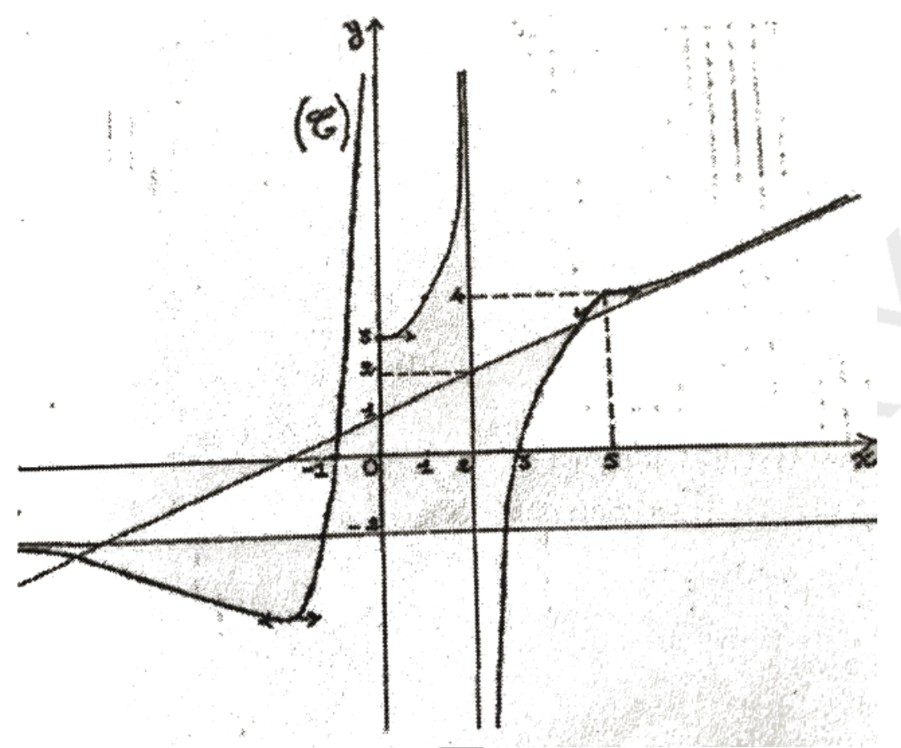
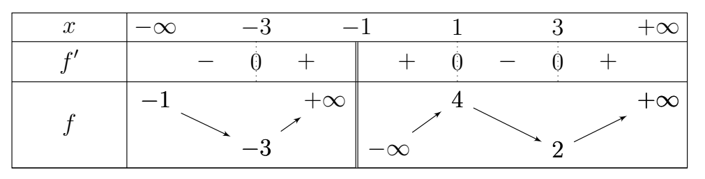
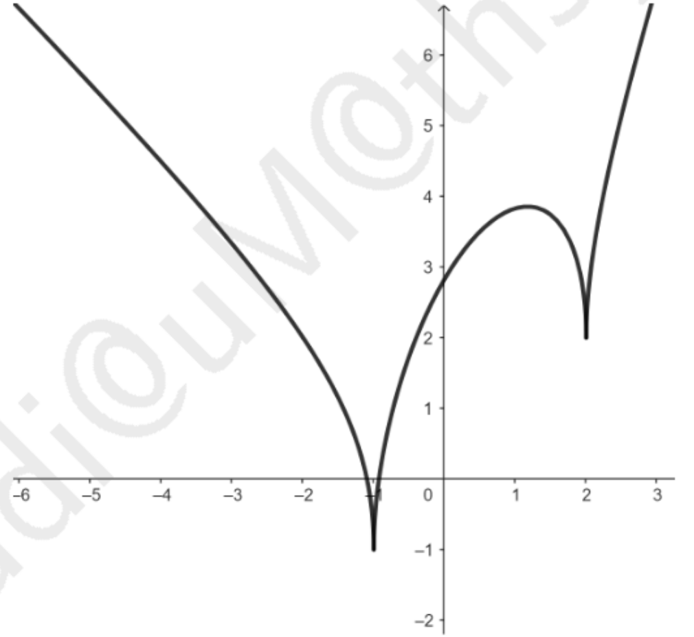

1. Déterminer, si elles existent, les limites suivantes :
2. Déterminer, si elles existent, les limites suivantes :
3. Déterminer, si elles existent, les limites suivantes :
4. Déterminer, si elles existent, les limites suivantes :
5. Déterminer les réels $a$ et $b$ pour que la droite d'équation $y = ax + b$ soit une asymptote à la courbe représentative de la fonction $x \mapsto \sqrt{x^2 + 4} - \dfrac{x}{\sqrt{2}}$.
1.
$\lim\limits_{x \to 0} \dfrac{\tan(3x)}{1 - \sqrt{x+1}} = \lim\limits_{x \to 0} \dfrac{\tan(3x)}{1 - \sqrt{x+1}} \times \dfrac{1 + \sqrt{x+1}}{1 + \sqrt{x+1}} = \lim\limits_{x \to 0} \dfrac{\tan(3x)(1+\sqrt{x+1})}{-x}$
$= \lim\limits_{x \to 0} \dfrac{\tan(3x)}{3x} \times 3 \times \dfrac{1+\sqrt{x+1}}{-1} = 1 \times 3 \times (-2) = -6$
$\boxed{-6}$
$\lim\limits_{x \to 2} \dfrac{\sqrt{x+2} - \sqrt{3x+3}}{x-2} = \lim\limits_{x \to 2} \dfrac{(x+2) - (3x+3)}{(x-2)(\sqrt{x+2} + \sqrt{3x+3})} = \lim\limits_{x \to 2} \dfrac{-2x-1}{(x-2)(\sqrt{x+2} + \sqrt{3x+3})}$
$= \lim\limits_{x \to 2} \dfrac{-2x-1}{x-2} \times \dfrac{1}{\sqrt{x+2} + \sqrt{3x+3}} = -\infty$
$\boxed{-\infty}$
$\lim\limits_{x \to 0} \dfrac{\cos x - 1}{x^3 + x^2} = \lim\limits_{x \to 0} \dfrac{-\frac{x^2}{2}}{x^2(x+1)} = \lim\limits_{x \to 0} \dfrac{-1}{2(x+1)} = -\dfrac{1}{2}$
$\boxed{-\dfrac{1}{2}}$
$\lim\limits_{x \to 0} \dfrac{3\sin^2 x - \cos x + 1}{x^2} = \lim\limits_{x \to 0} \dfrac{3\sin^2 x + (1-\cos x)}{x^2} = 3 + \dfrac{1}{2} = \dfrac{7}{2}$
$\boxed{\dfrac{7}{2}}$
$\lim\limits_{x \to 0} \dfrac{\sin x - \tan x}{x^3} = \lim\limits_{x \to 0} \dfrac{\sin x(1 - \frac{1}{\cos x})}{x^3} = \lim\limits_{x \to 0} \dfrac{\sin x(\cos x - 1)}{x^3 \cos x} = \lim\limits_{x \to 0} \dfrac{\sin x}{x} \times \dfrac{\cos x - 1}{x^2} \times \dfrac{1}{\cos x} = -\dfrac{1}{2}$
$\boxed{-\dfrac{1}{2}}$
$\lim\limits_{x \to 0} \dfrac{1 - \cos x}{x \tan x} = \lim\limits_{x \to 0} \dfrac{1 - \cos x}{x^2} \times \dfrac{x}{\tan x} = \dfrac{1}{2} \times 1 = \dfrac{1}{2}$
$\boxed{\dfrac{1}{2}}$
2.
$\lim\limits_{x \to \frac{\pi}{2}} \dfrac{1 - \tan x}{1 + \tan x} = 0$
$\lim\limits_{x \to 3} \dfrac{\sqrt{x+1} - 2}{\sqrt{x^2 - x - 6}} = \lim\limits_{x \to 3} \dfrac{(x-3)}{(\sqrt{x+1}+2)\sqrt{(x-3)(x+2)}} = \lim\limits_{x \to 3} \dfrac{\sqrt{x-3}}{(\sqrt{x+1}+2)\sqrt{x+2}} = 0$
3.
$\lim\limits_{x \to +\infty} (x - \sqrt{x^2 + 3x - 1}) = \lim\limits_{x \to +\infty} \dfrac{(x - \sqrt{x^2 + 3x - 1})(x + \sqrt{x^2 + 3x - 1})}{x + \sqrt{x^2 + 3x - 1}} = \lim\limits_{x \to +\infty} \dfrac{-3x + 1}{2x} = -\dfrac{3}{2}$
5. $f(x) = \sqrt{x^2 + 4} - \dfrac{x}{\sqrt{2}}$
$f(x) - \left(-\dfrac{1}{\sqrt{2}}x\right) = \sqrt{x^2 + 4}$
Donc $a = -\dfrac{1}{\sqrt{2}}$ et $b$ tel que $f(x) - ax \to b$
$\lim\limits_{x \to +\infty} (\sqrt{x^2 + 4} - x) = 0$, donc $b = 0$
$\boxed{a = -\dfrac{1}{\sqrt{2}}, b = 0}$
Calculer les limites suivantes :
1.
2.
3.
4.
5.
1. $\lim\limits_{x \to \frac{\pi}{4}} \dfrac{2\cos x - \sqrt{2}}{x - \frac{\pi}{4}} = -2\sin\left(\dfrac{\pi}{4}\right) = -\sqrt{2}$
$\lim\limits_{x \to 1} \dfrac{\sin(\pi x)}{x - 1} = -\pi$
2. $\lim\limits_{x \to \frac{\pi}{4}} \dfrac{1 - \sqrt{2}\cos x}{1 - \sqrt{2}\sin x} = 1$
$\lim\limits_{x \to 0^+} \dfrac{x\cos x + \sin x}{\sqrt{x+1} - 1} = \lim\limits_{x \to 0^+} \dfrac{x(\cos x + 1)}{x} = 2$
3. $\lim\limits_{x \to \frac{\pi}{4}} \dfrac{\tan x - 1}{x - \frac{\pi}{4}} = 1 + \tan^2\left(\dfrac{\pi}{4}\right) = 2$
4. $\lim\limits_{x \to +\infty} \left( x \arctan(\sqrt{x}) - \dfrac{\pi}{2}x \right) = -1$
$\lim\limits_{x \to 0^+} \dfrac{1}{x} \arctan\left( \dfrac{\sqrt{x}}{x+1} \right) = +\infty$
5. $\lim\limits_{x \to +\infty} (3x - 1 + \sqrt{9x^2 + 3x - 2}) = +\infty$
$\lim\limits_{x \to -\infty} (3x - 1 + \sqrt{9x^2 + 3x - 2}) = -1$
Étudier la continuité de la fonction $f$ sur $D_f$ dans chaque cas.
1. $f(x) = x + \sqrt{x+1}$, $D_f = [-1; +\infty[$
$f$ est continue sur $[-1; +\infty[$ car c'est la somme d'une fonction polynôme et d'une fonction racine carrée.
2. $f(x) = 4x + 1 + \dfrac{1}{x-1}$, $D_f = \mathbb{R} \setminus \{1\}$
$f$ est continue sur $]-\infty; 1[$ et sur $]1; +\infty[$ car c'est une fonction rationnelle.
3. $f(x) = 2\sqrt{x} - x$, $D_f = [0; +\infty[$
$f$ est continue sur $[0; +\infty[$.
4. $f(x) = \dfrac{\sqrt{1+x}}{1-x}$, $D_f = [-1; 1[ \cup ]1; +\infty[$
$f$ est continue sur $[-1; 1[$ et sur $]1; +\infty[$.
Donner la dérivée des fonctions définies par :
$f(x) = \dfrac{1 + \cos(2x)}{1 - \sin(2x)}$
$g(x) = \left( x + \dfrac{1}{x} \right) \sqrt{\dfrac{1}{x}}$
$h(x) = \sqrt[3]{x - 6} + \dfrac{1}{x}$
$k(x) = \left| \dfrac{x^2 - x}{x - 1} \right|$
$m(x) = x \sqrt{\dfrac{x^2 - 1}{x^2 + 1}}$
$n(x) = \dfrac{\sqrt{x^2 - 3x + 2}}{x + 1}$
$p(x) = \dfrac{\tan x}{1 - 2 \sin x}$
$q(x) = 3(x^2 - 3x + 5)^4$
$r(x) = \cos^2(3x)$
$s(x) = -2 \tan^2(2x)$
f : $f'(x) = \dfrac{-2\sin(2x)(1-\sin(2x)) - (1+\cos(2x))(-2\cos(2x))}{(1-\sin(2x))^2}$
$= \dfrac{-2\sin(2x) + 2\sin^2(2x) + 2\cos(2x) + 2\cos^2(2x)}{(1-\sin(2x))^2} = \dfrac{2(\cos(2x) - \sin(2x) + 1)}{(1-\sin(2x))^2}$
g : $g(x) = (x + \frac{1}{x})x^{-1/2} = x^{1/2} + x^{-3/2}$
$g'(x) = \dfrac{1}{2}x^{-1/2} - \dfrac{3}{2}x^{-5/2} = \dfrac{1}{2\sqrt{x}} - \dfrac{3}{2x^2\sqrt{x}}$
h : $h'(x) = \dfrac{1}{3\sqrt[3]{(x-6)^2}} - \dfrac{1}{x^2}$
k : $k(x) = |x|$ (car $\dfrac{x^2-x}{x-1} = x$ pour $x \neq 1$)
$k'(x) = \begin{cases} 1 & \text{si } x > 0 \\ -1 & \text{si } x < 0 \end{cases}$
q : $q'(x) = 12(x^2 - 3x + 5)^3(2x - 3)$
r : $r'(x) = -6\sin(3x)\cos(3x) = -3\sin(6x)$
s : $s'(x) = -8\tan(2x)(1 + \tan^2(2x))$
📈 Courbe de la fonction f
[Graphique à insérer - Courbe représentative de f]

La courbe $(C_f)$ est celle d'une fonction $f$ dans un repère orthonormé. $f$ est définie en 0 et on a : $f(0) = 3$.
1. $D_f = \mathbb{R} \setminus \{0, 2\}$ (d'après le graphique)
2. a) $\lim\limits_{x \to +\infty} f(x) = +\infty$, $\lim\limits_{x \to -\infty} f(x) = -\infty$
b) $\lim\limits_{x \to 0^+} f(x) = +\infty$, $\lim\limits_{x \to 0^-} f(x) = -\infty$
c) $\lim\limits_{x \to 2^+} f(x) = -\infty$, $\lim\limits_{x \to 2^-} f(x) = +\infty$
3. Oui, $y = x - 1$ est asymptote oblique.
4. $x = 0$ et $x = 2$ sont des asymptotes verticales.
5. Non, car la courbe admet une tangente verticale en 5.
Le tableau de variation ci-dessous est celui d'une fonction $f$ continue sur son ensemble de définition avec $f'(1) = 0$ et $f'(4) = -1$. La courbe $(C_f)$ de $f$ coupe l'axe des abscisses en $A(-2;0)$ et $B\left(-\frac{1}{2};0\right)$ et l'axe des ordonnées au point $C(0;2)$.
La droite $(D) : y = x - 3$ est une asymptote oblique en $+\infty$ et est en dessous de $(C_f)$ sur $[0; +\infty[$.
Tableau de variation de f
[Graphique à insérer - Tableau de variation de f]

Tableau de variation de f
1. $D_f = \mathbb{R} \setminus \{-1\}$ (car discontinuité en $-1$)
$\lim\limits_{x \to -\infty} f(x) = -1$, $\lim\limits_{x \to +\infty} f(x) = +\infty$
2. $D_f' = \mathbb{R} \setminus \{-1\}$
3. $y = -1$ est asymptote horizontale en $-\infty$
$y = x - 3$ est asymptote oblique en $+\infty$
$x = -1$ est asymptote verticale
4. $f'(1) = 0$, tangente horizontale en $x=1$
Demi-tangentes : $y = 2$ à gauche, $y = 2$ à droite
6.a) $g$ est strictement décroissante sur $[3; +\infty[$, donc bijective de $[3; +\infty[$ sur $]-\infty; 4]$.
6.b) $g^{-1}$ est dérivable en 2 car $g'(-3) \neq 0$.
7. Pour $m \in ]-\infty; 4[$, l'équation $f(x) = m$ admet 4 solutions.
Soit $f$ la fonction donnée par : $f(x) = \dfrac{2 \sin(2x)}{1 + \cos(x)}$
1. $1 + \cos x \neq 0 \iff \cos x \neq -1 \iff x \neq \pi + 2k\pi$
$D_f = \mathbb{R} \setminus \{\pi + 2k\pi, k \in \mathbb{Z}\}$
$f$ est $2\pi$-périodique, donc on étudie sur $]0, 2\pi[$.
2. $\lim\limits_{x \to \pi} \dfrac{2\sin(2x)}{1+\cos x} = \lim\limits_{x \to \pi} \dfrac{4\sin x \cos x}{1+\cos x} = \lim\limits_{x \to \pi} 4\cos x \dfrac{\sin x}{1+\cos x}$
$= \lim\limits_{x \to \pi} 4\cos x \times \dfrac{\sin x}{1+\cos x} = 4(-1) \times \dfrac{0}{0}$
$= \lim\limits_{x \to \pi} 4\cos x \times \dfrac{1 - \cos x}{\sin x} = -4 \times 0 = 0$
4. $f'(x) = \dfrac{4\cos(2x)(1+\cos x) + 2\sin(2x)\sin x}{(1+\cos x)^2}$
$= \dfrac{4(\cos^2(2x) + \cos x - 1)}{1 + \cos x}$
Signe de $f'$ : $f'(x) > 0$ sur $]0, \alpha[$ et $f'(x) < 0$ sur $]\alpha, 2\pi[$
Soit la fonction numérique $f : \mathbb{R} \to \mathbb{R}$ définie par :
Soit $g$ la restriction de $f$ à l'intervalle $]-\infty, 1]$.
Partie A - 1. $D_f = \mathbb{R}$ car les deux expressions sont définies sur $\mathbb{R}$.
2. Continuité en 1 :
$f(1) = -1 + 2 - \dfrac{2}{2} = 0$
$\lim\limits_{x \to 1^-} f(x) = 0$, $\lim\limits_{x \to 1^+} f(x) = 0$ donc $f$ est continue en 1.
Dérivabilité en 1 :
$f'_g(1) = \lim\limits_{h \to 0^-} \dfrac{f(1+h)-f(1)}{h} = -2$
$f'_d(1) = \lim\limits_{h \to 0^+} \dfrac{f(1+h)-f(1)}{h} = -\infty$
Donc $f$ n'est pas dérivable en 1.
3. $f$ admet un point anguleux en $x=1$.
4. $\lim\limits_{x \to -\infty} f(x) = +\infty$, $\lim\limits_{x \to +\infty} f(x) = +\infty$
5.a) En $-\infty$ : $f(x) - (-x+2) = -\dfrac{2x}{x^2+1} \to 0$, donc $D_1: y = -x+2$
En $+\infty$ : $f(x) - (x-1-3x) = f(x) - (-2x-1) \to 0$, donc $D_2: y = -2x-1$
Partie B - 1. $g$ est strictement décroissante sur $]-\infty, 1]$ donc bijective de $]-\infty, 1]$ sur $]-\infty, 0]$.
Partie B - 3.d) $G(x) = -\dfrac{x^2}{2} + 2x - \ln(x^2+1)$ sur $]-\infty, 1]$
Soit la fonction numérique $f : \mathbb{R} \to \mathbb{R}$ telle que :
On désigne par $(C_f)$ sa courbe représentative.
Partie ASoit $h$ la restriction de $f$ à l'intervalle $I = ]-\infty; 1[$.
Partie A - 1. $D_f = [0; 1[ \cup ]1; 2[ \cup ]2; +\infty[$
2. $\lim\limits_{x \to 0^+} f(x) = \dfrac{1}{3}$, $\lim\limits_{x \to 1^-} f(x) = -\infty$, $\lim\limits_{x \to 1^+} f(x) = +\infty$
$\lim\limits_{x \to 2^-} f(x) = -\infty$, $\lim\limits_{x \to 2^+} f(x) = +\infty$, $\lim\limits_{x \to +\infty} f(x) = 1$
3. $f$ n'est pas continue en 1 car limites différentes.
4. $f$ n'est pas dérivable en 1.
5.a) $f(x) = x + 3 + \dfrac{2}{x-2}$ sur $]-\infty; 1[$
5.b) $(\Delta) : y = x + 3$
6. En $+\infty$ : $f(x) \to 1$, donc $y=1$ est asymptote horizontale.
Partie B - 1. $h$ est bijective de $]-\infty; 1[$ sur $]-\infty; 0]$
Partie B - 2.a) $h(0) = \dfrac{-1}{3}$
Partie B - 3. $h^{-1}(x) = \dfrac{x - 3 - \sqrt{x^2 - 6x + 1}}{2}$
Soit $f$ une fonction dont la courbe représentative est donnée ci-dessous
📈 Courbe de la fonction f
[Graphique à insérer - Courbe représentative de f]

La courbe $(C_f)$ est celle d'une fonction $f$ dans un repère orthonormé. $f$ est définie en 0 et on a : $f(0) = 3$.
Dans cette partie, on prend $f(x) = x + 2\sqrt{|x^2 - x - 2|}$.
Étude graphique - 1. $f(-1) = 1$, $f(2) = 1$, $D_f = \mathbb{R}$
Étude graphique - 2. $\lim\limits_{x \to -\infty} f(x) = +\infty$, $\lim\limits_{x \to +\infty} f(x) = +\infty$
Étude numérique - 1.a) $D_f = \mathbb{R}$
1.b) $f(x) = \begin{cases} x + 2\sqrt{x^2 - x - 2} & \text{si } x \in ]-\infty; -1] \cup [2; +\infty[ \\ x + 2\sqrt{-x^2 + x + 2} & \text{si } x \in ]-1; 2[ \end{cases}$
1.c) $f(x) = x + 2\sqrt{x^2 - x - 2} = x + 2x\sqrt{1 - \frac{1}{x} - \frac{2}{x^2}} = 3x - 1 + o(1)$
Donc $(D) : y = 3x - 1$ est asymptote oblique en $+\infty$.
1.d) $f(x) - (3x-1) = 2\sqrt{x^2 - x - 2} - 2x + 1 < 0$, donc $(C_f)$ est en dessous de $(D)$.
1.e) En $-\infty$ : $f(x) \sim -x + 2|x| = -x - 2x = -3x$, donc branche parabolique de direction $y = -3x$.
2.a) $f$ n'est pas dérivable en $-1$ et $2$ (points anguleux).
2.b) $f'(x) = \begin{cases} 1 + \dfrac{2x-1}{\sqrt{x^2-x-2}} & \text{sur } ]-\infty; -1[ \cup ]2; +\infty[ \\ 1 + \dfrac{2x-1}{\sqrt{-x^2+x+2}} & \text{sur } ]-1; 2[ \end{cases}$
2.d) $x \in \left[\dfrac{1+\sqrt{5}}{2}; 2\right[$
3.c) $\alpha = \dfrac{3+\sqrt{5}}{2}$
$(g^{-1})(\alpha) = \dfrac{1}{g'(\alpha)} = \dfrac{\sqrt{\alpha^2-\alpha-2}}{2\alpha-1 + \sqrt{\alpha^2-\alpha-2}}$
Soit $f$ la fonction définie par :
On note $(C_f)$ sa courbe représentative dans un repère orthonormé $(O, \vec{i}, \vec{j})$.
1. $D_f = \mathbb{R}$
2. $f(x) = \begin{cases} -x + \sqrt{x^2+4} & \text{si } x < 0 \\ \sqrt{4-x^2} & \text{si } 0 \leq x \leq 2 \\ \sqrt{x^2-4} & \text{si } x> 2 \end{cases}$
3.a) $f(0) = 2$, $\lim\limits_{x \to 0^-} f(x) = 2$, $\lim\limits_{x \to 0^+} f(x) = 2$ donc $f$ est continue en 0.
3.b) $f'_g(0) = -1$, $f'_d(0) = 0$, donc $f$ n'est pas dérivable en 0 (point anguleux).
3.c) $f$ n'est pas dérivable en 2 (tangente verticale).
4.a) $\lim\limits_{x \to -\infty} f(x) = +\infty$, $\lim\limits_{x \to +\infty} f(x) = +\infty$
4.b) En $-\infty$ : $f(x) \sim -x + |x| = -2x$, branche parabolique de direction $y = -2x$
En $+\infty$ : $f(x) \sim x$, asymptote oblique $y = x$
5.a) $h'(x) = -\dfrac{x}{\sqrt{4-x^2}} - 1 < 0$ sur $[0, 2]$, donc $h$ strictement décroissante.
$h(0) = 2 > 0$ et $h(2) = -2 < 0$, donc unique solution $\alpha$.
5.b) $h(1) = \sqrt{3} - 1 > 0$ et $h\left(\dfrac{3}{2}\right) = \sqrt{4 - \dfrac{9}{4}} - \dfrac{3}{2} = \dfrac{\sqrt{7}}{2} - \dfrac{3}{2} < 0$
Donc $\alpha \in \left[1, \dfrac{3}{2}\right]$.
6.a) $f'(x) = \begin{cases} -1 + \dfrac{x}{\sqrt{x^2+4}} & \text{sur } ]-\infty; 0[ \\ -\dfrac{x}{\sqrt{4-x^2}} & \text{sur } ]0; 2[ \\ \dfrac{x}{\sqrt{x^2-4}} & \text{sur } ]2; +\infty[ \end{cases}$
7.a) $g$ est strictement croissante sur $]2; +\infty[$, donc bijective de $]2; +\infty[$ sur $]0; +\infty[$.
7.c) $g^{-1}(x) = \sqrt{x^2 + 4}$ pour $x > 0$
8. Pour $x \in \left[1, \dfrac{3}{2}\right]$, $|f'(x)| = \dfrac{x}{\sqrt{4-x^2}} \leq \dfrac{3\sqrt{7}}{7}$
9. Par l'inégalité des accroissements finis.